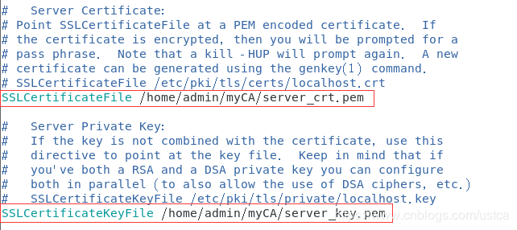

原文连接:https://www.cnblogs.com/ustca/p/12060580.html
由于CA收费，所以可以自建CA，通过将CA导入浏览器实现https的效果，曾经12306购票就需要自行导入网站证书。
关于https
2015年阿里巴巴将旗下淘宝、天猫（包括移动客户端）全站启用HTTPS加密，并顺利通过“双十一”考验，成为全球最大的电商平台全站HTTPS改造案例。
全站HTTPS需要解决3大问题。
首先是性能，主要分三点：
- HTTPS需要多次握手，因此网络耗时变长，用户从HTTP跳转到HTTPS需要一些时间；
- HTTPS要做RSA校验，这会影响到设备性能；
- 所有CDN节点要支持HTTPS，而且需要有极其复杂的解决方案来面对DDoS的挑战。
其次，兼容性及周边：
- 页面里所有嵌入的资源都要改成HTTPS的，这些资源可能会来自不同的部门甚至不同的公司，包括图片、视频、表单等等，否则浏览器就会警告；
- 移动客户端（APP）也需要适配HTTPS，所以必须做调整修改；
- 解决第三方网站看不到Referer的问题；
- 所有的开发、测试环境都要做HTTPS的升级；
最后，为保证上线时的顺利切换，需要提前准备大量的预案，以应对各种可能出现的情况。
目前为止，国内大部分主流网站都已经完成了HTTP到HTTPS的迁移，如淘宝、京东、百度、B站、优酷等，仍在使用HTTP的有腾讯视频、爱奇艺、当当等网站。
以下先简介https与加密原理
https简介
HTTPS （全称：Hyper Text Transfer Protocol over SecureSocket Layer），是以安全为目标的 HTTP 通道，在HTTP的基础上通过传输加密和身份认证保证了传输过程的安全性。
SSL(Secure Sockets Layer 安全套接层)，及其继任者传输层安全（Transport Layer Security，TLS）是为网络通信提供安全及数据完整性的一种安全协议。
HTTPS 在HTTP 的基础上加入SSL 层，以SSL加密技术为安全基础。 HTTPS 与HTTP的默认端口不同，并存在一个加密/身份验证层（在 HTTP与 TCP 之间，即应用层与传输层之间）。
SSL协议可分为两层：
- SSL记录协议（SSL Record Protocol）：它建立在可靠的传输协议（如TCP）之上，为高层协议提供数据封装、压缩、加密等基本功能的支持。
- SSL握手协议（SSL Handshake Protocol）：它建立在SSL记录协议之上，用于在实际的数据传输开始前，通讯双方进行身份认证、协商加密算法、交换加密密钥等。
搭建https的流程主要与SSL握手协议有关。
为什么要从http迁移到https
HTTP协议传输的数据都是未加密的，也就是明文的，因此使用HTTP协议传输隐私信息非常不安全，为了保证这些隐私数据能加密传输，于是网景公司设计了SSL（Secure Sockets Layer）协议用于对HTTP协议传输的数据进行加密，从而就诞生了HTTPS。
简单来说，HTTPS协议是由SSL+HTTP协议构建的可进行加密传输、身份认证的网络协议，要比HTTP协议安全。
HTTPS和HTTP的区别主要如下：
1、https协议需要到CA（Certificate Authority 即颁发数字证书的机构）申请证书，一般免费证书较少，因而需要一定费用。
2、http是超文本传输协议，信息是明文传输，https则是具有安全性的ssl加密传输协议。
3、http和https使用的是完全不同的连接方式，用的端口也不一样，前者是80，后者是443。
4、http的连接很简单，是无状态的；HTTPS协议是由SSL+HTTP协议构建的可进行加密传输、身份认证的网络协议，比HTTP协议安全。
通信加密简介
对称加密
采用单钥密码系统的加密方法，同一个密钥可以同时用作信息的加密和解密，也称为单密钥加密。
举例：凯撒密码
凯撒密码是罗马扩张时期朱利斯• 凯撒（Julius Caesar）创造的，用于加密通过信使传递的作战命令。它将字母表中的字母移动一定位置而实现加密。例如如果向右移动 2 位，则 字母 A 将变为 C，字母 B 将变为 D，…，字母 X 变成 Z，字母 Y 则变为 A，字母 Z 变为 B。
优点:
算法公开、计算量小、加密速度快、加密效率高。缺点:
如果一方的密钥被泄露，加密信息也就不安全了。非对称加密
非对称加密算法需要两个密钥：公开密钥（publickey:简称公钥）和私有密钥（privatekey:简称私钥）。
公钥与私钥是一对，如果用公钥对数据进行加密，只有用对应的私钥才能解密，相反，也可以先用私钥加密，再使用公钥解密。因为加密和解密使用的是两个不同的密钥，所以这种算法叫作非对称加密算法。
非对称加密算法实现机密信息交换的基本过程是：
甲方生成一对密钥并将公钥公开，需要向甲方发送信息的其他角色(乙方)使用该密钥(甲方的公钥)对机密信息进行加密后再发送给甲方；甲方再用自己私钥对加密后的信息进行解密。甲方想要回复乙方时正好相反，使用乙方的公钥对数据进行加密，同理，乙方使用自己的私钥来进行解密。
优点:
一方密钥的丢失不会导致通信被破解，相对更安全。缺点:
加密和解密花费时间长、速度慢，只适合对少量数据进行加密。使用场景
模拟一个通信场景：
有A、B、C、D四个用户，A想让B、C、D与自己进行私密通信。如果使用对称加密，则A-B、A-C、A-D之间分别需要协商一份密钥。
如果使用非对称加密，则只需要A保留私钥，将自己的公钥分发给B、C、D。
无论B、C、D哪一方使用公钥加密消息，都只有A才能用私钥解密。
安全性考虑：
通信前需要提前协商密钥。使用对称加密
A与其他用户协商密钥的消息，如果被抓包截获，就很容易受到“中间人攻击”，即通信数据被攻击者侦测或掉包。使用非对称加密
A同样需要与其他用户协商密钥，A需要构造一对公私钥，将公钥发送给B、C、D，自己保留私钥。
此时，若A发送给B、C、D的消息被黑客E截获，E就可以保留A的公钥，然后构造一对新的公私钥，将私钥保留，自己的公钥发给B、C、D。
按照非对称加密，E就成了通信的中间人：
B、C、D使用E的公钥加密数据并发送给A，E劫持通信数据后，使用自己的私钥解密数据，再使用A的公钥加密数据发送给A。
对于用户A、B、C、D而言，他们并不知道自己的通信对于中间人而言是曝光的。
怎样才能使通信安全：
利用非对称加密来确认双方身份建立连接，即SSL握手。此时需要引入一个公信机构F，用于为用户证明身份，否则在当前通信环境中，个人是无法为自己证明身份的。
这个机构便是CA。
CA自己有一对公私钥，公钥公开给所有用户，私钥自己保留。
当A想要向B证明自己时，只需要先请求CA给自己的消息用CA私钥加密一下（签名），再把消息发送给B，如果B用CA的公钥能解密，说明这条消息是被CA认证过的，没有被其他人篡改过。
此时中间人攻击就不再奏效，因为即便截获了A发送给B的数据，中间人也只能用CA的公钥解密出消息内容——“这是一条被CA认证过，由A发送给B的数据”。但中间人无法对消息内容进行篡改，因为B只会用CA的公钥去验证这条消息是否被CA认证过，中间人用自己的私钥加密的数据，B用CA的公钥无法解开。
安全证书CA的权力是巨大的，曾经发生的CNNIC证书事件，CNNIC作为受信任的根CA，如果它愿意，它可以随便伪造国内外任何站点的SSL证书，配合防火墙DNS污染，它可以在国内发起对任何网站的中间人攻击、截获通信数据。
再考虑对称加密：
就对称加密而言，公信机构无法达到认证效果。
因为对称加密只有一个密钥，一旦公开任何人都可以对加密信息进行篡改。以上是对称加密与非对称加密使用时比较大的区别，对称加密只能两两之间，而非对称加密既可以用自己的私钥加密数据，告诉拥有公钥的人这条消息是我发的，也可以让拥有公钥的人放心发送数据，因为只有拥有私钥的人才能解密数据。
考虑通信效率：
如果需要频繁通信，每次通信都使用非对称加密需要花费较多的时间。对称加密与非对称加密各自拥有优点，两者结合才能更好的发挥作用。
在实际使用中，是使用非对称加密建立连接，通过非对称加密的安全连接协商一个用于对称加密的密钥。
由于协商密钥的过程是安全的，所以协商的密钥不会再被篡改，之后就可以使用该密钥进行后续对称加密的快速通信。
https建立流程
以下介绍https的实际流程：
- CA将自己的证书（公信凭证）交给各浏览器厂商，厂商将证书配置到各自浏览器。
- 网站将自己的证书（身份凭证）交给CA，让CA使用私钥对证书进行签名，CA签名后发回给网站。在这个过程中，CA需要核实网站的真实性，网站发给CA签名的也不仅只是证书，其中网站证书（含网站URL）和网站公钥是必要的，还会包含一些其他信息一同签名。
- 浏览器用户向网站请求安全连接，网站把CA签名后的证书发给用户，浏览器会根据证书信息，检查是哪个CA做的签名，从浏览器自带的CA证书中找到对应公钥验证。
- 如果验证通过，就证明了网站身份的可靠性，用户可以通过网站提供的公钥进行安全连接，和网站协商后续对称加密的密钥。
自建CA证书
实验环境：
- 操作系统：CentOS 7
- Apache版本：httpd
- php版本：php7
检查OpenSSL，如果版本低于1.0.1f 建议升级，因为1.0.1f版本之下的OpenSSL有一个Heartbleed漏洞。
版本查看：$openssl version
版本更新：$sudo yum update openssl
首先建立myCA目录用于存放自建CA的相关信息：
cd && mkdir -p myCA/signedcerts && mkdir myCA/private && cd myCAmyCA用于存放 CA 根证书，证书数据库，以及后续服务器生成的证书，密钥以及请求。
signedcerts保存签名证书的 copy，private包含私钥。
之后配置myCA相关参数，在myCA目录下进行：
echo '01'>serial && touch index.txt然后创建 caconfig.cnf 文件（自建CA的配置文件）：
vim ~/myCA/caconfig.cnfcaconfig.cnf文件内容如下：
# My sample caconfig.cnf file.
#
# Default configuration to use when one is not provided on the command line.
#
[ ca ]
default_ca = local_ca
#
#
# Default location of directories and files needed to generate certificates.
#
[ local_ca ]
dir = /home/<username>/myCA
certificate = $dir/cacert.pem
database = $dir/index.txt
new_certs_dir = $dir/signedcerts
private_key = $dir/private/cakey.pem
serial = $dir/serial
#
#
# Default expiration and encryption policies for certificates.
#
default_crl_days = 365
default_days = 1825
default_md = SHA256
#
policy = local_ca_policy
x509_extensions = local_ca_extensions
#
#
# Default policy to use when generating server certificates. The following
# fields must be defined in the server certificate.
#
[ local_ca_policy ]
commonName = supplied
stateOrProvinceName = supplied
countryName = supplied
emailAddress = supplied
organizationName = supplied
organizationalUnitName = supplied
#
#
# x509 extensions to use when generating server certificates.
#
[ local_ca_extensions ]
subjectAltName = DNS:localhost
basicConstraints = CA:false
nsCertType = server
#
#
# The default root certificate generation policy.
#
[ req ]
default_bits = 2048
default_keyfile = /home/<username>/myCA/private/cakey.pem
default_md = SHA256
#
prompt = no
distinguished_name = root_ca_distinguished_name
x509_extensions = root_ca_extensions
#
#
# Root Certificate Authority distinguished name. Change these fields to match
# your local environment!
#
[ root_ca_distinguished_name ]
commonName = MyOwn Root Certificate Authority # CA机构名
stateOrProvinceName = JS # CA所在省份
countryName = CN # CA所在国家（仅限2个字符）
emailAddress = XXXX@XXX.com # 邮箱
organizationName = XXX #
organizationalUnitName = XXX #
#
[ root_ca_extensions ]
basicConstraints = CA:true其中dir和default_keyfile的路径需要改成自己的username
生成 CA 根证书和密钥：
export OPENSSL_CONF=~/myCA/caconfig.cnf #该命令用于给环境变量 OPENSSL_CONF 赋值为caconfig.cnf。
openssl req -x509 -newkey rsa:2048 -out cacert.pem -outform PEM -days 1825 # 生成 CA 根证书和密钥该步骤需要用户设置一个密码，请牢记。
以上步骤生成了 CA 自签名根证书，和 RSA 公/私密钥对，证书的格式是 PEM，有效期是1825天。
/myCA/cacert.pem: CA 根证书
/myCA/private/cakey.pem： CA 私钥
生成服务器配置文件exampleserver.cnf：
vim ~/myCA/exampleserver.cnfexampleserver.cnf文件内容如下：
#
# exampleserver.cnf
#
[ req ]
prompt = no
distinguished_name = server_distinguished_name
[ server_distinguished_name ]
commonName = localhost # 服务器域名
stateOrProvinceName = JS # 服务器所在省份
countryName = CN # 服务器所在国家（仅限2个字符）
emailAddress = XXXX@XXX.com # 邮箱
organizationName = XXX #
organizationalUnitName = XXX # 生成服务器证书和密钥：
export OPENSSL_CONF=~/myCA/exampleserver.cnf # 该命令设置环境变量 OPENSSL_CONF，使得 openssl 更换配置文件。
openssl req -newkey rsa:1024 -keyout tempkey.pem -keyform PEM -out tempreq.pem -outform PEM同样的，需要设置密码。
之后，有2种对临时密钥的操作，选择其一即可：
1.将临时私钥转换为 unencrypted key，即密钥不加密状态：
penssl rsa -in tempkey.pem -out server_key.pem需要输入密码短语。
2.如果希望将 key 保持为加密状态，直接改名：
mv tempkey.pem server_key.pem两者的区别是，第二种需要在服务器启动时输入私钥的密码，否则会导致服务器启动失败，但第二种安全性高于第一种，可以更好的保护密钥。
使用 CA key 对服务器证书签名：
export OPENSSL_CONF=~/myCA/caconfig.cnf
openssl ca -in tempreq.pem -out server_crt.pem删除临时证书和密钥：
rm -f tempkey.pem && rm -f tempreq.pem现在，自签名的服务器证书和密钥对便产生了：
- server_crt.pem : 服务器证书文件
- server_key.pem : 服务器密钥文件
以下通过LAMP搭建一个网站进行验证
配置httpd(Apache)
第一步：安装Apache服务程序(apache服务的软件包名称叫做httpd)
yum install httpd -y第二步： 将Apache服务添加到开机自启中
systemctl start httpd
systemctl enable httpd第三步：打开浏览器 测试 127.0.0.1，可以看到默认主页
httpd主要目录：
- 服务目录：/etc/httpd
- 主配置目录：/etc/httpd/conf/httpd.conf
- 网站数据目录：/var/www/html
- 访问日志：/var/log/httpd/access_log
- 错误日志：/var/log/httpd/error_log
配置php7
1、安装源
安装php72w需要配置额外的yum源，否则会报错不能找到相关软件包。
php高版本的yum源地址，有两部分，其中一部分是epel-release，另外一部分来自webtatic，如果跳过epel-release安装webtatic的时候会有错误。
安装需要的命令是：
rpm -Uvh https://dl.Fedoraproject.org/pub/epel/7/x86_64/Packages/e/epel-release-7-11.noarch.rpm
rpm -Uvh https://mirror.webtatic.com/yum/el7/webtatic-release.rpm也可以选择下面的这个命令，是一样的效果：
yum install epel-release -y
rpm -Uvh https://mirror.webtatic.com/yum/el7/webtatic-release.rpm2、清除历史版本
为了防止CentOS上面发生php冲突，所以，这个命令还是先执行一下更好些：
yum -y remove php*3、安装扩展包
事实上，这里面的对应扩展库很多，一定要注意的有cli和fpm这两个包，其它的相关包看需要：
yum -y install php72w php72w-cli php72w-fpm php72w-common php72w-devel php72w-mysql由于后面要用MySQL，所以mysql包也是需要的。
比较全的版本：
yum -y install php72w php72w-cli php72w-fpm php72w-common php72w-devel php72w-embedded php72w-gd php72w-mbstring php72w-mysqlnd php72w-opcache php72w-pdo php72w-xml配置MySQL
在CentOS中默认安装有MariaDB，这个是MySQL的分支，但为了需要，还是要在系统中安装MySQL，而且安装完成之后可以直接覆盖掉MariaDB。
网络环境允许的话直接安装：
wget -i -c http://dev.mysql.com/get/mysql57-community-release-el7-10.noarch.rpm
yum -y install mysql57-community-release-el7-10.noarch.rpm
yum -y install mysql-community-servermysql-community-server较大如果下载很慢，可以到国内镜像源下载：
http://mirrors.ustc.edu.cn/mysql-ftp/Downloads/
下载后解压到图中文件目录下：
注意文件权限，再安装：
yum -y install mysql57-community-release-el7-10.noarch.rpm
yum -y install mysql-community-servermysql有初始默认密码，使用以下命令查找：
grep "password" /var/log/mysqld.log输入初始密码，此时不能做任何事情，因为MySQL默认必须修改密码之后才能操作数据库。
修改密码：
mysql -uroot -p
ALTER USER 'root'@'localhost' IDENTIFIED BY '新密码';新密码设置的时候如果设置的过于简单会报错， 原因是因为MySQL有密码设置的规范，具体是与validate_password_policy的值有关，可以先尝试大小写加下划线的长密码。
MySQL完整的初始密码规则查看
SHOW VARIABLES LIKE 'validate_password%';可以通过如下命令修改：
mysql> set global validate_password.policy=0;
mysql> set global validate_password.length=1;之后可以重新设置简单密码。
配置SSL
ssl需要以下模块：
修改ssl.conf：
cd /etc/httpd/conf.d
sudo vim ssl.conf
修改DocumentRoot到自己的网页目录，并更改证书密钥来源为自建CA：

网页配置
将需要的网站文件夹复制到/var/www/html/目录下
修改/etc/httpd/conf/httpd.conf文件中的网站文件名：
创建自己网站需要的数据库：
create database myzoo;
use myzoo;
create table Person(PersonID int primary key auto_increment, Password varchar(100),Salt varchar(100),Username varchar(100),Token varchar(100),Zoobars int default 10, Profile varchar(5000));重启httpd查看当前网页：
setenforce 0
sudo systemctl restart httpd先关闭selinux，不然会报错，服务启动前会验证之前设置的证书密码（网站的那个，不是CA的）。
目前是普通的http连接，因为并没有将自建CA导入浏览器。
浏览器导入证书
由于网站的证书是自建CA签名的，浏览器并不信任，所以需要手动导入CA证书。
以chrome为例：设置->高级->隐私设置和安全性->管理证书
可以查看证书详细信息和导入自建CA证书
因为之前配置网站证书时设置的域名是localhost，所以需要通过localhost域名进行https连接，不能使用127.0.0.1。
地址栏访问状态出现一把绿色的锁，成功搭建https。